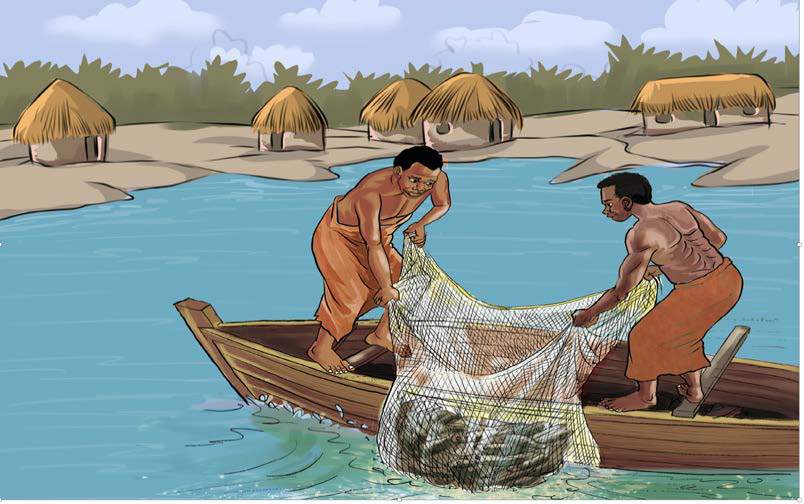

kwenda mbali kwenye maji yenye kina kirefu. Kielelezo namba 13, kinawasilisha uvuvi kwa kutumia nyavu.

Vilevile, wavuvi walitumia mitego ya samaki kama vile madema ambayo yalitokana na sayansi na teknolojia ya ususi. Sayansi na teknolojia hizi ziliwawezesha wavuvi kuvua samaki wengi. Uhifadhi wa samaki ulifanywa kwa kutumia chumvi na moto. Hii ilisaidia kuwa na samaki kwa matumizi ya baadaye na kwa ajili ya biashara.
Shughuli za uvuvi zilifanyika zaidi na jamii zilizoishi maeneo ya maziwa, mito na katika sehemu za Pwani ya Bahari ya Hindi. Jamii zilizoishi maeneo ya mwambao wa bahari na ziwa, ndizo zilizojishughulisha zaidi na uvuvi. Mfano katika Pwani ya Bahari ya Hindi na Visiwa vya Zanzibar, jamii zilizojihusisha na uvuvi ni Wamakua, Wadigo, Watumbatu, Wandengereko, Wamwera na Wakojani. Ukanda wa Ziwa Viktoria walikuwa Wakerewe, Wajita, Wasukuma, Wakwaya, Wakara na Wajaluo. Ukanda wa Ziwa Tanganyika ni Waha, na ukanda wa Ziwa Nyasa ni Wanyasa na Wakisi.